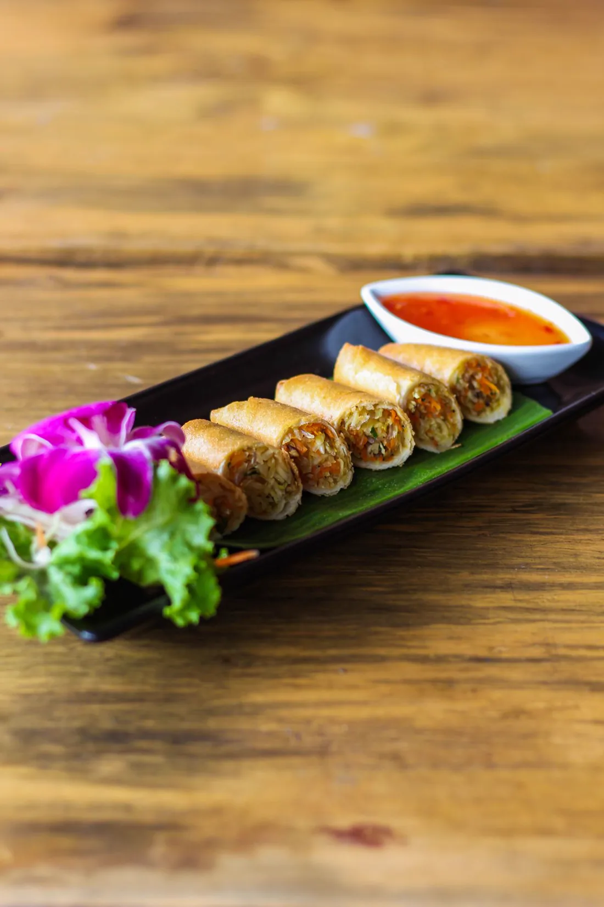
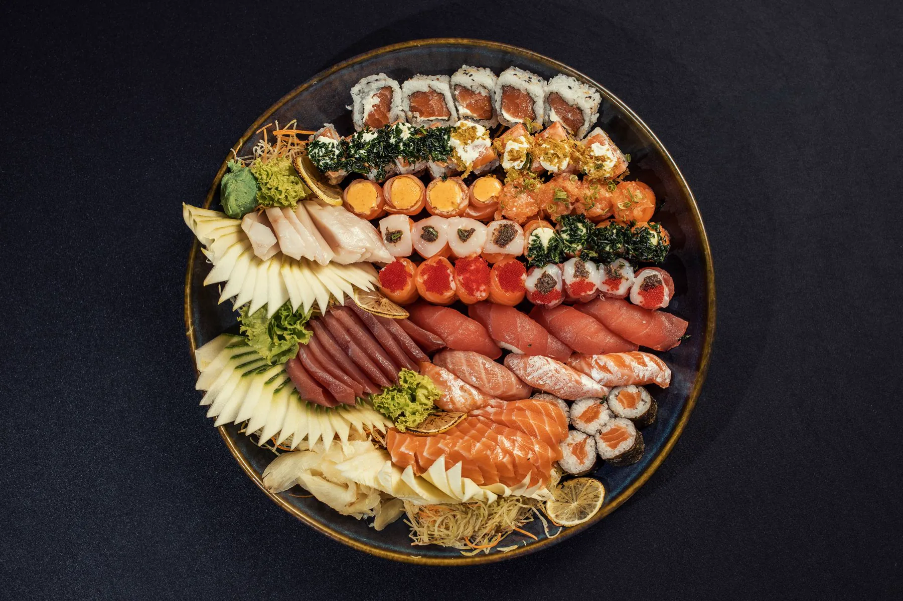
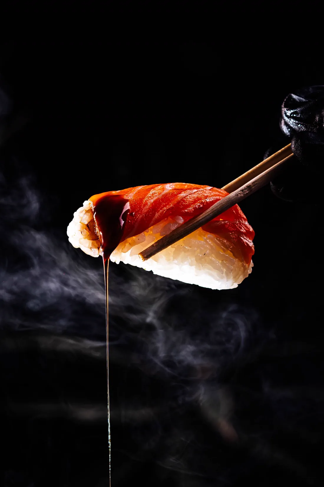
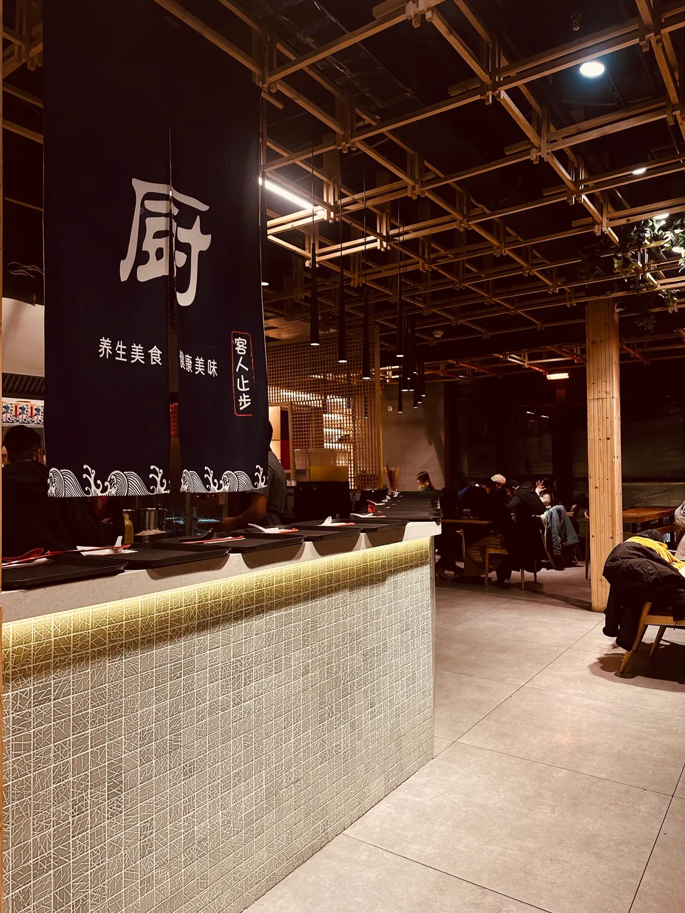
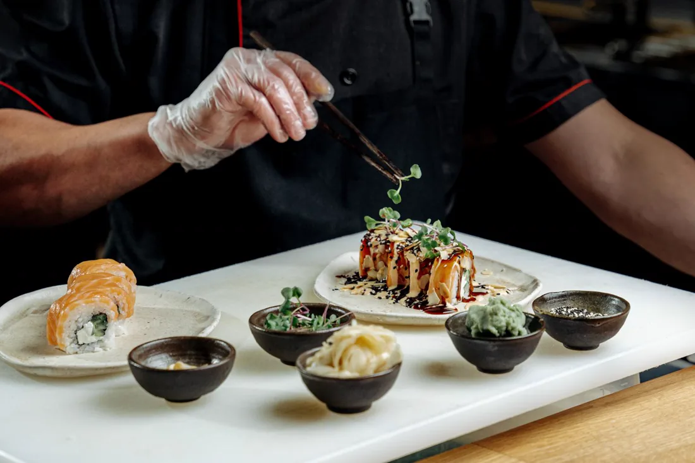
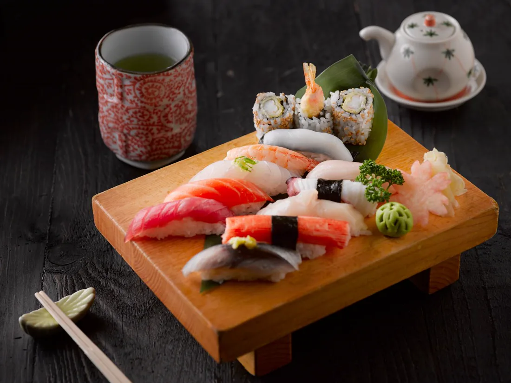
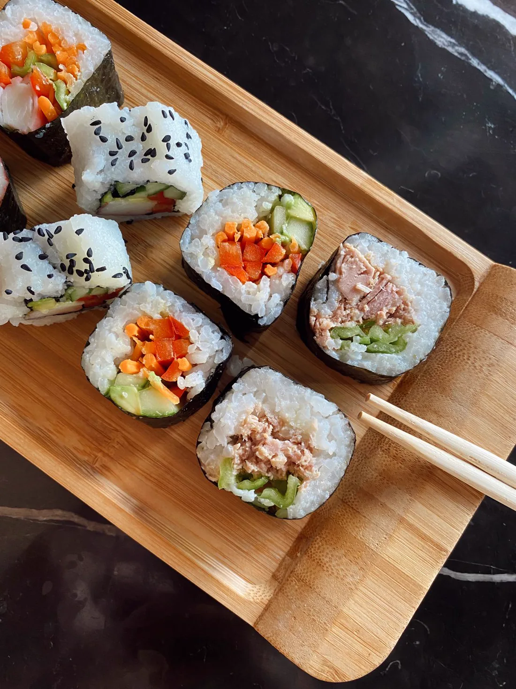

San Justo · Villa Luro
Amida Sushi
Una experiencia que se disfruta con todos los sentidos
Sushi y cocina japonesa elaborados al momento. Rolls, sashimi y platos calientes, con sushi libre tres noches por semana.
Producto fresco
Selección diaria de pescado y materia prima.
Oficio
Más de quince años preparando sushi en zona oeste.
Dos locales
San Justo y Villa Luro, con delivery propio.
Sushi libre
Una secuencia completa, servida a la mesa
No es un buffet: te llevamos las piezas a medida que las pedís. Disponible tres noches por semana.
Martes
Jueves
Domingos
Turnos de 1 h 30

De trayectoria
+15 años
Te guiamos en cada paso
Armamos la secuencia según tus gustos y te acompañamos si es tu primera vez con el sushi. Empezás con las piezas más suaves y terminás con rolls calientes, platos de wok y postre.
Mar · Jue · Dom
Sushi libre
Secuencia completa de piezas, platos calientes y postre.
$34.900por persona
- Rolls clásicos y especiales
- Sashimi, nigiri y makis calientes
- Wok o risotto a elección
- Postre de rolls de helado y banana
Las bebidas no están incluidas.
La experiencia
Más que una carta

El salón
Un rincón cálido e íntimo
Un salón chico, con luz tenue y pocas mesas. Esa escala es lo que nos permite atender cada mesa con calma, sin apurar el ritmo de la noche.

El oficio
Hecho al momento
El pescado se elige fresco, el arroz se trabaja y cada combinación se arma en el momento del pedido. Nada sale de una vitrina esperando.

Para compartir
Mesas y celebraciones
Desde una cena para dos hasta barcos de sushi para grupos. Coordinamos la reserva según la cantidad de comensales y lo que quieras festejar.
Locales y reservas
Dos locales para pedir o comer
Elegí el más cercano y hacé tu pedido o reserva por el WhatsApp de cada local.
San Justo
Reservar en San JustoVilla Luro
Reservar en Villa Luro
Horarios
Cuándo estamos abiertos
Lunes a jueves18:00 – 23:30
Viernes a domingo18:00 – 00:00
Solo turno noche. Reservá con anticipación: el salón es chico y se llena rápido.
Nosotros
Un rincón cálido en el corazón de San Justo
Hace más de quince años hacemos sushi en Av. Illia 2290. Somos un salón chico e íntimo, con una fuente de agua, luz tenue y pocas mesas: esa es justamente la experiencia que buscamos cuidar.
Elegimos el pescado fresco, trabajamos el arroz y preparamos cada combinación con la idea de que hasta quien «no come sushi» se lo lleve de recuerdo.
Atención personalizada, materia prima fresca y una cocina que no se apura.

Opiniones
Lo que dicen nuestros clientes
Reseñas publicadas en Google por comensales de Amida Sushi.
«Un lugar pequeño, pero acogedor. La comida riquísima y buenos precios.»
Veronica MalovrhReseña de Google
«Pedí un combinado hot por take away. Me comuniqué por WhatsApp para aclarar que retiren el langostino porque soy alérgico y me avisaron que cambiaban el aceite para evitar la contaminación. Súper atentos y el combinado riquísimo.»
Dario NuñezReseña de Google
«Fuimos dos veces al sushi libre. La comida está muy rica y es una linda experiencia para compartir.»
Juani CalabriaReseña de Google
Eventos
Llevá Amida a tu acontecimiento
Barcos de sushi
Presentaciones armadas para sorprender a tus invitados.
Mesas para grupos
Coordinamos tu reserva según la cantidad de comensales.
Eventos de empresa
Opciones de catering para oficinas y celebraciones.
Instagram
Ver Instagram
Seguinos en @amida_sushi
Más de 30 mil seguidores, promos, novedades y el día a día del local.
Plantilla disponible
¿Querés una página así para tu restaurante?
Cargo tu menú con fotos y precios, tus promos, los horarios y la ubicación. Tus clientes te reservan y te piden por WhatsApp.